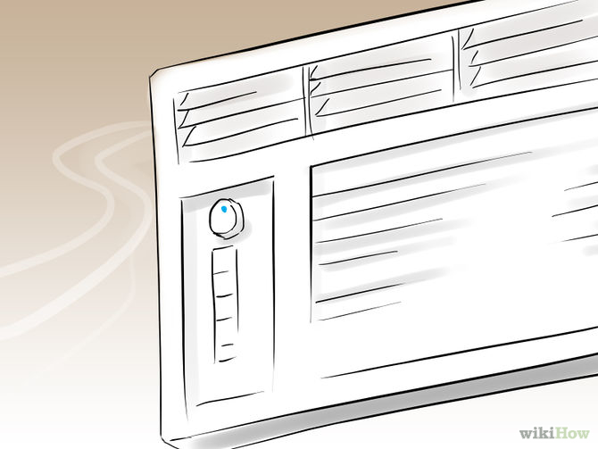
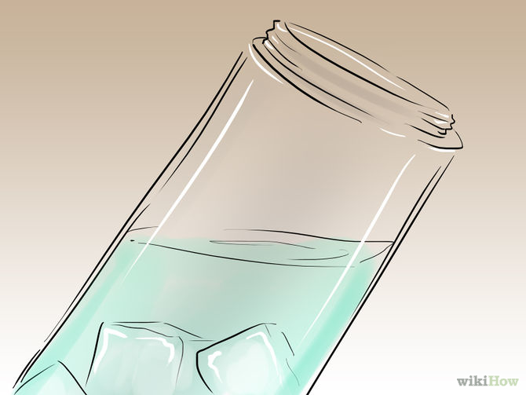

How to do Keep Pet Rabbits Cool
Method 1 of 2: Creating a Cool Environment

- Monitor the temperature.
The ideal temperature for a rabbit is between 55 and 70 degrees Fahrenheit. They can tolerate temperatures as high as 85 degrees Fahrenheit, if absolutely necessary, but anything higher will increase their risk of heat stroke.

-
Keep your rabbit’s cage well-ventilated. Use fans to cool your rabbit. Position an oscillating fan so that it blows in the rabbit cage. This will create a breeze to cool your rabbit down. Make sure that your rabbit can escape the fan if it chooses. You can build a hiding place for the rabbit with a cardboard box.
- Hang a wet towel over top of your rabbit cage. This is especially effective in combination with a running fan. Not only will the towel provide shade, but the cool moisture will help as well.

- Use ice to cool down its cage. Put some ice packs underneath your rabbit cage. This will cool the bottom of the cage. You can also freeze a water bottle and place that inside the cage to create a cool spot for the rabbit to lie against when it is too hot. Never apply ice directly to the rabbit's body. Doing so may lower your rabbit’s temperature too quickly.
Method 2 of 2: Treating an Overheated Rabbit
- Check for common signs of heat exhaustion. Your rabbit's ears are the most important to pay attention to. When rabbits overheat, blood vessels in their ears swell and cause a general redness to appear. This is a great indicator of heat stroke in rabbits. An overheated rabbit may also have one or more of the following symptoms.

- Brush your rabbit's fur. Rabbits shed a lot. Normally, they clean themselves and remove all the excess fur and dander. If your rabbit is shedding and not cleaning itself properly, this extra fur can act as another layer of insulation. In the winter, this works well for a rabbit. In the summer, it can lead to heat exhaustion.

- Keep your rabbit hydrated. Place small ice cubes in your rabbit's water bottle to lower its temperature. If you have to leave your rabbit for a long period of time in warmer temperatures, this is a good step. Over the course of the day, the water will remain cooler for longer as the ice cubes melt. Dehydration can lead to heat stroke more easily in rabbits. If your rabbit is overheated, it will look for ways to cool itself off. If its water is colder than usual, it will seek it out and drink more to cool itself down.
- Do not submerge your rabbit in icy water. It is ok to dip its feet in water, but don't completely dunk it in it. Rabbits by nature are not strong swimmers. You may think that a quick dunk will cool them off, but in reality, it may exacerbate your rabbit's condition. The shock of the water may cause anxiety, which will elevate your rabbit’s core temperature.
- See your veterinarian. Try calling your vet first. He may ask you to try different cooling measures before you bring your rabbit in for an exam. He’ll probably suggest many of the tips included above. If you’ve already tried all of these tips, tell your vet so and then proceed to bring your rabbit into the clinic.